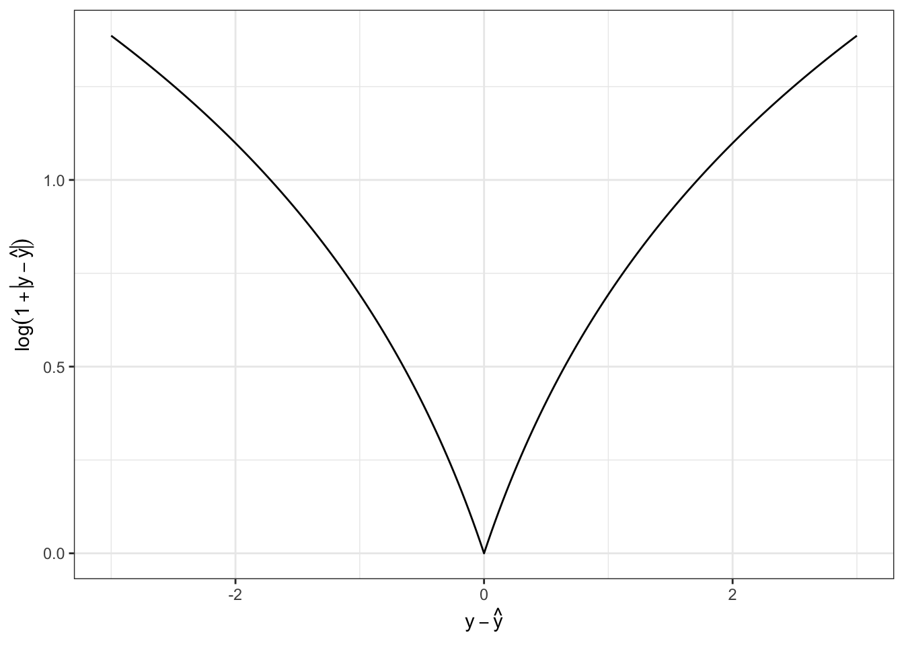

Q <- matrix(c(
sqrt(3)/2, +1/2,
-1/2, sqrt(3)/2
), ncol=2, byrow=TRUE)
crossprod(Q) [,1] [,2]
[1,] 1 0
[2,] 0 1The original test booklet can be found here.
\[\newcommand{\bX}{\mathbf{X}}\newcommand{\by}{\mathbf{y}}\newcommand{\bx}{\mathbf{x}}\newcommand{\R}{\mathbb{R}}\newcommand{\bbeta}{\mathbf{\beta}}\newcommand{\argmin}{\text{arg min}}\newcommand{\bD}{\mathbf{D}}\newcommand{\bzero}{\mathbf{0}}\newcommand{\bI}{\mathbf{I}}\newcommand{\bz}{\mathbf{z}}\newcommand{\bQ}{\mathbf{Q}}\newcommand{\bU}{\mathbf{U}}\newcommand{\bV}{\mathbf{V}}\newcommand{\bone}{\mathbf{1}}\newcommand{\bY}{\mathbf{Y}}\newcommand{\bA}{\mathbf{A}}\]
Linear regression is a supervised learning method because it has a matrix of features \(\bX \in \R^{n \times p}\) and a vector of responses \(\by \in \R^{n}\) which we attempt to predict using \(\bX\).
True. Linear regression methods are supervised learning methods because they attempt to predict (continuous) responses \(y\) using a set of covariates \(\bx\).
Models with higher training error always have higher test error.
False. If this were true, we could solve all of life’s problems by minimizing training error with no regard for overfitting.
Aside: This story is made somewhat more difficult by recent studies in ML practice where we have learned to fit rather complex models in a way that keeps both training and test error small. We will discuss this at various points throughout the semester, but it is still by no means an always relationship.
The matrix \[\begin{align*} \bQ &= \begin{pmatrix} \cos 30^{\circ} & \sin 30^{\circ} \\ -\sin 30^{\circ} & \cos 30^{\circ} \end{pmatrix} \\ &= \begin{pmatrix} \sqrt{3}/2 & 1/2 \\ -1/2 & \sqrt{3}/2\end{pmatrix} \end{align*}\] is orthogonal.
If \(f(\cdot)\) is a convex function and \(\nabla f(\bx) = \bzero\) for some \(\bx\), then \(\bx\) is a local minimizer of \(f(\cdot)\).
True. Convex functions are remarkable for the fact that \(\nabla f(\bx) = \bzero\) is sufficient to ensure a global minimizer, which implies a local minimizer a fortiori. See, e.g., Section 3.1.3 of BV.
OLS finds the linear model with the lowest training MSE.
True. OLS identifes the linear model with the lowest training MSE but it does not guarantee optimal test MSE (no method can do that). In fact, we know that suitably-tuned ridge regression will achieve lower test MSE than OLS (in expectation).
Recall that OLS is the ERM for MSE (for linear functions): that means that is, by definition, the minimizer giving the lowest MSE on the training (empirical) set.
The loss function \(\mathcal{L}(y, \hat{y}) = \log(1 +|y - \hat{y}|)\) is convex.
False. To see this, we can either plot \(f(x) = \log(1 + |x|)\) and note its downward concavity:

Mathematically, we can also note that \(f''(x) < 0\). If we assume \(x > 0\) so we can safely ignore the absolute value (to make the math a hair easier), we have
\[\begin{align*} f'(x) &= \frac{1}{1+x} \\ f''(x) &= -\frac{1}{(1+x)^2} \]
which is clearly negative for all \(x\). (In the range \(x < 0\), two negative signs cancel when computing the second derivative, so that expression is valid for all \(x \neq 0\)).
If \(\bX \in \R^{n \times p}\) (\(n > p\)) is full-rank and has an SVD given by \(\bX = \bU\bD\bV^{\top}\), the OLS linear regression coefficients of \(\by\) on \(\bX\) are given by \(\hat{\bbeta} = \bU\bD^{-1}\bV^{\top}\by\)
False. If \(\bX\) is full-rank with \(n > p\), then \(\bU \in \R^{n \times p}\), so \(\hat{\bbeta}\) would have to be a \(n\)-vector if it existed, which cannot be the case since we have \(p\) coefficients.
We can also work out the correct answer relatively simply:
\[\begin{align*} \hat{\bbeta}_{\text{OLS}} &= (\bX^{\top}\bX)^{-1}\bX^{\top}\by \\ &= ([\bU\bD\bV^{\top}]^{\top}[\bU\bD\bV^{\top}])^{-1}[\bU\bD\bV^{\top}]^{\top}\by \\ &= (\bV\bD\bU^{\top}\bU\bD\bV^{\top})^{-1}\bV\bD\bU^{\top}\by \\ &= (\bV\bD^2\bV^{\top})^{-1}\bV\bD\bU^{\top}\by \\ &= \bV\bD^{-2}\bV^{-1}\bV\bD\bU^{\top} \by \\ &= \bV\bD^{-1}\bU^{\top}\by \\ &= \bX^{\dagger}\by \end{align*}\]
where \(\bX^{\dagger}\) is a matrix known as the Moore-Penrose (pseudo)-Inverse of \(\bX\) and is the natural extension of inverses for non-square matrices. See https://arxiv.org/abs/1110.6882 for more.
Reducing bias always increases variance
False. While this is often true, it is not always so.
For a simple case, consider two ‘estimators’ for linear regression:
\[\hat{\bbeta}_{\text{OLS}} = (\bX^{\top}\bX)^{-1}\bX^{\top}\by\]
and
\[\hat{\bbeta}_{\text{Biased}} = \hat{\bbeta}_{\text{OLS}} + \bone\]
where \(\bone\) is the all-ones vector. Since \(\hat{\bbeta}_{\text{OLS}}\) is unbiased, \(\hat{\bbeta}_{\text{Biased}}\) clearly has a higher bias, but the same variance. (Adding a constant doesn’t impact the variance.)
Remember the bias-variance decomposition is a fact of life, while the bias-variance tradeoff is a property that certain, but not all, model families have.
\(K\)-Nearest Neighbors can be used for regression and classification.
True. We give examples of both in the course notes.
For any given vector \(\bx \in \R^p\), we have \(\|\bx\|_{\infty} \leq \|\bx\|_2 \leq \|\bx\|_1\).
True. This follows from a general property of \(\ell_p\) norms on \(\R^n\):
\[r < p \implies \|\bx\|_{p} \leq \|\bx\|_r \leq n^{1/r - 1/p}\|\bx\|_p\]
To see this directly, we first note that \(\|\bx\|_{\infty} = \max |x_i|\) which is clearly less than the square root of the sum of the squared elements if more than one element is non-zero.
\(\|\bx\|_2 \leq \|\bx\|_1\) is only a bit more tricky to show:
\[ \|\bx\|_2^2 = \sum_{i=1}^n |x_i|^2 \leq \sum_{i=1}^n |x_i|^2 + 2 \sum_{\substack{i < j}} |x_i| |x_j| = \sum_{i, j=1}^n |x_i||x_j| = \|\bx\|_1^2 \]
A model with high complexity is more likely to underfit the training data.
False. Model complexity refers to the ability to to fit any data (including random noise), so more complexity makes a model more able to fit (and possibly overfit) training data.
Gradient descent iteratively updates model parameters by moving them in the direction of the gradient.
False. Gradient descent moves in the opposite direction of the gradient; moving in the direction of the gradient gives gradient ascent.
Mathematically, if gradient descent is given by
\[\bx^{(k+1)} \leftarrow \bx^{(k)} - \gamma_k \nabla f(\bx^{(k)})\]
we have
\[\bx^{(k+1)} - \bx^{(k)} = - \gamma_k \nabla f(\bx^{(k)})\]
so motion is in the opposite direction.
Give an example that demonstrates why the \(\ell_0\)-“norm” is not convex.
Recall that a convex function satisfies the inequality
\[f(\lambda \bx + (1-\lambda)\by) \leq \lambda f(\bx) + (1-\lambda) f(\by)\]
for all \(\bx, \by\) and all \(\lambda \in [0, 1]\).
Let us take
\[\bx = \begin{pmatrix} 1 \\ 0 \end{pmatrix}, \by = \begin{pmatrix} 0 \\ 1 \end{pmatrix}\]
with \(\lambda = 0.5\) so
\[\lambda \bx + (1-\lambda) \bx = \begin{pmatrix} 0.5 \\ 0.5 \end{pmatrix}.\]
This then gives us
\[\|\bx\|_0 = 1, \|\by\|_0 = 1 \text{ but } \|\lambda \bx + (1-\lambda)\by\|_0 = 2\]
which violates our inequality.
Dynamic pricing (i.e., changing the prices on a website based on user purchasing and search history) is a popular example of reinforcement learning (RL). Define RL and explain why dynamic pricing can be analyzed as an RL problem.
The Wikipedia definition of RL is fine:
Reinforcement learning (RL) is concerned with how an intelligent agent should take actions in a dynamic environment in order to maximize a reward signal.
The book by Sutton and Barto gives a more precise definition, but the key elements are:
Online (non-batch) decision making
Impact upon the world
Experiences a reward / loss at each step
Dynamic pricing is RL because decisions are made (prices are offered to customers) in real time, those decisions can impact customer behavior (price reduction increase sales), and the business incurs a profit or loss at each sale.
When might stochastic gradient methods be preferred over standard (non-stochastic) gradient methods in model fitting and what advantages do they provide?
Stochastic gradient methods use a random subset of the data to approximate the full data set (“batch”) gradient at each update. The main motivation for stochastic methods is the fact they use a smaller subset of the data at each iteration, so they are much faster per iteration. Typically, this nets out to faster overall model fitting.
More recent research has suggested that stochastic gradient methods also have some advantages in non-convex optimization as they avoid getting ‘stuck’ in local (non-global) minima due to the randomness of each step, but this is not yet fully understood.
Misclassification error seems like a natural loss function for ’= classification, but it is actually quite difficult to work with. Why?
The misclassification loss is essentially a flipped Heaviside step function: \(f(x) = 1_{x < 0}\). This function has zero gradient almost everywhere, so it is not amenable to gradient based methods. It is also non-convex so global optimization guarantees are not easy to come by. Statistically, it fails to distinguish between ‘nearly right’ and ‘totally and utterly wrong’, which makes it near useless to guide model updates. (This is basically the zero-gradient point restated.)
In your own words, define the strategy of empirical risk minimization. Why do we use it? What does it guarantee us? What can’t it guarantee us?
Empirical risk minimization is the “meta-algorithm” of selecting the model from a given model class that minimizes loss on the training data. It guarantees minimal training error and, when the model complexity is not too high, is a good guide for minimizing test error, but it cannot guarantee low test error. (Nothing can: we only have ‘usually’ or ‘with high probability’ type guarantees.)
In your own words, explain why use of a holdout set (or similar techniques) is important for choosing hyperparameters in machine learning.
Your answer should discuss how the use of a holdout set (distinct from a training set) can be used to get unbiased estimates of the test error which we can then use to select the hyperparameter. If we don’t use a holdout set, we are more likely to overfit the training data since we never test a model’s out-of-sample predictive capability.
Bayesian Optimization is one way of applying active learning}* techniques to tune the hyperparameters of a complex ML system. Describe two other applications of active learning (not necessarily in model tuning). For each application, describe both the decision be made at each step and the final quantity being estimated.
Many possible answers, including:
Adaptive testing. At each step, the test system decides whether to increase difficulty, decrease difficulty, or move to a new topic; the final decision is an estimate of the student’s “true” ability.
Adaptive clinical trial design. In certain clinical trial designs, the assignment of patients to treatments is not pre-randomized, but is instead based on the experience of prior patients (with treatments that appear more successful being assigned more frequently). This reduces the ethical challenges associated with giving a large number of patients a placebo when the trial drug appears to be working effectively. The final decision is determining whether the new drug does in fact outperform the placebo.
The square matrix \(\bA\) has a singular value decomposition given by:
\[\bA = \begin{pmatrix} 0 & -2 & 0 \\ 3 & 0 & 0 \\ 0 & 0 & 0 \end{pmatrix} = \begin{pmatrix} 0 & -1 & 0 \\ 1 & 0 & 0 \\ 0 & 0 & 1 \end{pmatrix} \begin{pmatrix} 3 & 0 & 0 \\ 0 & 2 & 0 \\ 0 & 0 & 0 \end{pmatrix} \begin{pmatrix} 1 & 0 & 0 \\ 0 & 1 & 0 \\ 0 & 0 & -1 \end{pmatrix}^{\top} \]
Is \(\bA\) invertible? If yes, what is its inverse? If no, why not?
\(\bA\) is not invertible. It is not full rank as one of its singular values is zero (the other two are 3 and 2), so attempting to invert the middle term (\(\bD\) matrix) would result in a “divide by zero” error.
More concretely, note that:
A <- matrix(c(0, -2, 0,
3, 0, 0,
0, 0, 0), nrow=3, byrow=TRUE)
x1 <- matrix(c(1, 2, 3), ncol=1)
x2 <- matrix(c(1, 2, 8), ncol=1)
all.equal(A %*% x1, A %*% x2)[1] TRUESo \(\bA\) maps \(\bx_1, \bx_2\) to the same vector. That means that we cannot “go backwards” from \(\bA\bx_1\) and \(\bA\bx_2\) to \(\bx_1\) and \(\bx_2\) and hence \(\bA\) is not invertible.
The Moore-Penrose (pseudo-)Inverse can be used to get the minimal pre-image of a given vector:
A_mp_inv <- pracma::pinv(A)
z <- A %*% x1
x_hat <- A_mp_inv %*% z
norm(x_hat) # Less than norm(x1), norm(x2)[1] 3or, formally, it can be used to compute:
\[\hat{\bx} = \min_{\bx: \bA\bx = \bz} \|\bx\|_2\]
This construct will form the basis for the next set of topics covered in this course.
Give three examples of classification problems: one binary, one multi-class, and one ordinal.
Many possible answers, including:
The bias-variance of MSE for prediction has the form \[\text{Test-MSE} = \text{Bias}^2 + \text{Variance} + \text{Irreducible Error}.\] Define each of these terms and explain (in words) where they come from.
See notes for more.
Give two strengths and two weaknesses of \(K\)-nearest neighbor methods.
Many possible answers, including:
OLS is known to be BLUE in some circumstances. Define what it means for a method to be BLUE, state the conditions under which OLS is BLUE, and explain why this may not be as important as it originally seems.
BLUE: Best Unbiased Linear Estimator. BLUE refers to the estimator that is unbiased and has minimal MSE (equivalent to being minimal variance), while being linear in the obervations \(y\).
OLS is always a linear estimator, so this really just comes down to asking about minimum-variance (or “efficiency” in statistics-speak) and unbiasedness. OLS is unbiased when the underlying data generating process is itself truly linear and when the error terms are uncorrelated with \(\bX\). OLS is efficient when data points are IID.
While interesting at first glance, BLUE is not so interesting as it only applies when the true DGP is actually linear and if we are unwilling to accept any bias. There are many biased estimators which have a lower variance and a lower total MSE than BLUE estimators.
Interestingly, the “L” is not strictly necessary for this result to hold, but the theoretical analysis becomes significantly more complex. See https://arxiv.org/abs/2212.14185 for more.
In this problem, you will derive a new loss function for regression, use it to pose a new ERM problem, solve it in closed-form using linear algebra, develop an iterative algorithm for fitting this model on exceptionally large data sets, and construct a simulation to estimate its error. Note that not all parts of this problem are weighted equally.
You are given a set of \(n\) training points \(\{(x_i, y_i)\}_{i=1}^n\) and want to fit a quadratic model (with intercept) this data. To do so, you will need to express your data in terms of linear algebra quantities (vectors or matrices), \(\bX\), \(\by\), and \(\bbeta\). Write out \(\bX, \by, \bbeta\) for this problem, including any necessary feature engineering, and give the dimensions of \(\bX, \by, \bbeta\).
We will need:
\[\by = \begin{pmatrix} y_1 \\ y_2 \\ \dots \\ y_n \end{pmatrix} \in \R^n\]
\[\bX = \begin{pmatrix} 1 & x_1 & x_1^2 \\ 1 & x_2 & x_2^2 \\ & \dots & \\ 1 & x_n & x_n^2 \end{pmatrix} \in \R^{n \times 3}\]
\[\bbeta = \begin{pmatrix} \beta_{\text{Intercept}} \\ \beta_{\text{Linear Term}} \\ \beta_{\text{Quadratic Term}} \end{pmatrix} \in \R^3\]
For this problem, you want to minimize squared percent error, with a (pointwise) loss function: \[\mathcal{L}(y, \hat{y}) = \left(\frac{y - \hat{y}}{y}\right)^2 = \frac{(y - \hat{y})^2}{y^2} = \left(1 - \frac{\hat{y}}{y}\right)^2\] Write the empirical risk minimization problem corresponding to this loss function using your \(\bX, \by, \bbeta\) from the previous part. If you need to define any additional quantities (and you likely do!), make sure to define them clearly and give their dimensions.
Assuming \(y_i \neq 0\) for all \(i = 1, \dots, n\), define \(\bY\) to be a diagonal matrix with diagonal elements given by the \(y_i\). We note then that:
\[\begin{align*} \mathcal{L}(\by, \hat{\by}) &= \sum_{i=1}^n \frac{(y_i - \hat{y}_i)^2}{y^2_i} \\ &= (\by - \hat{\by})^{\top}\bY^{-2}(\by - \hat{\by}) \\ &= (\by - \bX\bbeta)^{\top}\bY^{-2}(\by - \bX\bbeta) \end{align*}\]
with the definitions given above. (So this is essentially weighted least squares, with the weights inversely proportional to the true response.) The ERM problem is thus:
\[\argmin_{\bbeta \in \R^3} \frac{1}{2}(\by - \bX\bbeta)^{\top}\bY^{-2}(\by - \bX\bbeta) \]
where the optional prefactor of \(1/2\) makes algebra in the next step easier.
Give a closed form (matrix algebra) expression for the estimated coefficient vector \(\hat{\bbeta}\).
Hint: Differentiate your objective function from the previous part, set the gradient to zero, and solve for \(\hat{\bbeta}\).
We can differentiate the above objective function and set it equal to zero. The objective is quadratic (with a positive definite weight matrix since $y_i^2 > \() in the optimization variable (\)$), so convex and the problem has no constraints. Therefore, setting the gradient to zero and solving will guarantee us an optimal solution.
\[\begin{align*} \frac{\partial}{\partial \bbeta}\left[\frac{1}{2}(\by - \bX\bbeta)^{\top}\bY^{-2}(\by - \bX\bbeta)\right] &= \bzero \\ -\bX^{\top}\bY^{-2}(\by - \bX\bbeta) &= \bzero \\ \bX^{\top}\bY^{-2}\bX\bbeta &= \bX^{\top}\bY^{-2}\by \\ \implies \hat{\bbeta}_{\text{MSPE}} &= (\bX^{\top}\bY^{-2}\bX)^{-1}\bX^{\top}\bY^{-2}\by \end{align*}\]
If \(\bX\) has rank 3 and \(y_i \neq 0\) for all \(i\), this is well-defined.
When fitting this model to large data sets, the matrix algebra might be too slow to implement exactly. In this context, you might choose to use an iterative (gradient) method instead. Derive a gradient descent method for this problem and write out pseudocode to implement your algorithm.
You do not need to specify the step-size and can leave it as a generic step size \(\gamma_k\).
We have the gradient from above, so we plug this into our basic gradient update loop (see the formula sheet) to get the following first order method. In R:
mspe_grad_descent <- function(x, y,
step_size=1e-4, # Small (constant) step size
beta_0 = rep(0, NCOL(X)), # Initial guess
tol = 1e-6, # Stopping tolerance
max_iter = 1e6, # Maximum number of iterations
optimal_step = TRUE # Use a theory based step size instead of the user-provided one
){
## Check if any y == 0 as this breaks MSPE loss
stopifnot(min(abs(y)) > 1e-6)
n <- length(x)
stopifnot(length(y) == n)
## Construct the design matrix X
X <- matrix(c(rep(1, n), x, x^2), ncol=3)
stopifnot(length(beta_0) == NCOL(X))
# Make sure y and beta are vectors
y <- matrix(y, ncol=1)
beta_0 <- matrix(beta_0, ncol=1)
# Construct weight matrix
Y_minus2 <- diag(1/as.vector(y)^2, n, n)
if(optimal_step){
XtY_minus2X <- crossprod(X, Y_minus2 %*% X)
step_size <- 1/(1.03 * max(eigen(XtY_minus2X,
symmetric=TRUE,
only.values=TRUE)$values))
}
iter <- 0
beta <- beta_0
repeat{
beta_old <- beta
gradient <- -crossprod(X, Y_minus2 %*% (y - X %*% beta))
beta <- beta - step_size * gradient
iter <- iter + 1
if(sum(abs(beta - beta_old)) < tol){
return(beta)
}
if(iter >= max_iter){
warning("Algorithm not converged. Use with caution and consider reducing step size.")
return(beta)
}
}
}Pseudo-code will suffice for this problem. Perfect R or Python are not required.
Extra Credit: The argument optimal_step in the functions above uses a (mostly) optimal constant step size. In particular, the optimal step fixed step size you can use for gradient descent is one over the maximum eignevalue of the Hessian (second derivative matrix) over the domain of the function. For this problem, the Hessian is fixed so this isn’t too expensive and provides much faster convergence than simply guessing a step size: \[\gamma_{\text{optimal}} = \frac{1}{\lambda_{\max}(\bX^{\top}\bY^{-2}\bX)}.\]
This is a \(3\times 3\) matrix, so its eigenvalues are cheap to compute. Finally, we actually use a step size that is a bit smaller than this to adapt to any numerical instability.
Unlike OLS, this solution is no longer linear in \(\mathbf{y}\) (due to the \(y_i\) in the denominator of the loss) which makes it hard to determine the bias or the variance analytically. In pseudo-code, write out a simulation that would determine the MSE of this estimator. You may make any assumptions needed about the true relationship between \(X\) and \(Y\), the (marginal) distributions of \(X\) or the noise, etc. as long as you state them clearly.
To construct a simulation to assess MSE, we first need to posit a data generating process. Let’s pick
\[\begin{align*} X &\sim \mathcal{N}(5, 1^2) \\ \epsilon & \sim \mathcal{N}(0, 1^2) Y = 1 + 2X + 3X^2 + \epsilon \end{align*}\]
and fix ourselves to have 30 data points. In this case, we know the true coefficients and we will be fitting a model where the ‘model class’ contains the true model, so we can focus on parameter estimation instead of predictive accuracy. With this, the simulation is straightforward:
N_SIMULATIONS <- 500
MSE <- function(beta_hat, beta_star) mean((beta_hat - beta_star)^2)
n_samples <- 30
replicate(N_SIMULATIONS, {
beta_star <- matrix(c(1, 2, 3), ncol=1)
x <- rnorm(n_samples, mean=5, sd=1)
epsilon <- rnorm(n_samples, mean=0, sd=1)
X <- matrix(c(rep(1, n_samples), x, x^2), ncol=3)
y <- X %*% beta_star + epsilon
Y_minus2 <- diag(1/as.vector(y)^2, n_samples, n_samples)
# Use exact forms for speed
beta_hat_ols <- solve(crossprod(X), crossprod(X, y))
beta_hat_mspe <- solve(crossprod(X, Y_minus2 %*% X), crossprod(X, Y_minus2 %*% y))
c(MSE_OLS = MSE(beta_star, beta_hat_ols),
MSE_MSPE = MSE(beta_star, beta_hat_mspe))
}) |> rowMeans() MSE_OLS MSE_MSPE
7.090259 10.847992 So while the MSE of the MSPE estimator isn’t too bad, the OLS estimator is dominant in (at least this one) this setting.